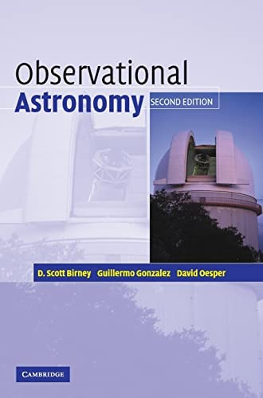

Spring 2023 PHYS406¶
Syllabus¶
Course Description¶
Observational techniques in astronomy with emphasis on constellation identification, celestial movements, and telescopic observation. Individualized night observations are required.
This course covers the principles and techniques of modern astronomical data acquisition and reduction. The aim is to provide you with a thorough understanding of the concepts involved in acquiring and reducing astronomical data, as well as practical experience in image processing, photometry, and spectroscopy.
Course Grade¶
Course Grade Weights
Homework 20%
Lab Exercises 20%
Participation 10%
Project 10%
Midterm Exam 20%
Final Exam 20%
Letter Grade Distribution
A = 93% - 100% B = 83% - 86.99% C = 73% - 76.99% D = 63% - 66.99%
A-= 90% - 92.99% B-= 80% - 82.99% C-= 70% - 72.99% D-= 60% - 62.99%
B+= 87% - 89.99% C+= 77% - 79.99% D+= 67% - 69.99% F = 0% - 59.99%
Homework¶
There will be ~8 problem sets assigned though out the course and are based on material derived from the textbook. Tentatively one assignment every other week. Students are encouraged to collaborate but must submit their own work.
Lab Exercises¶
This assignments will have students analyze astronomical data, such as reducing large data sets or plotting distribution curves. Students will be given set of goals to accomplish with each exercise and will submit a lab report of their work.
Particpation¶
Attendance is a requirement for this course. There will be at least one mandatory night observation. Instructor will corrdinate with class and plan accordingly.
Projects¶
There will be one large scale astronomical project given in the semester. The project will combine multiple lab exercises and allow students to experience astronomical research. Details on the project will be given near the midpoint of the semester.
Examinations¶
There will be a midterm and a final exam given in this course. Exam will focus on material derived from the textbook but can include lab style questions. If you have a conflict and cannot make the test time you must contact the instructor a minimum of 48 business hours prior to the test date and take the test early. Any student that does not take a test prior to the due date will automatically receive a zero for that test. No late test will be offered.
Submitting Work Policies¶
All documents for assignments must be uploaded through Canvas. Any work emailed to the instructor will not be graded.
The following table is quick reference for the penalties applied in the unfortunate case that work is submitted late. Timeliness is an important factor in the professional world and we must all strive to complete our work in a timely manner.
Late Submission Policies
Homework 5% penalty per day late.
Lab Exercises 5% penalty per day late.
Test No makeup exams are offered.
Required Materials¶
You must have access to a desktop computer or laptop that uses Windows 10 or macOS as its operating system, along with tools that scan scan physical documents to submission uploads. Course material is not guaranteed to function properly on tablet or smartphone devices. The instructor bears no responsibility for “technical issues” from use of tablet or smart-phone electronics. A stable internet connection is also required for the course. Webcams and microphones are highly recommended tools to have. If you believe you may have difficulties with the required materials you should contact your instructor immediately
Course Textbook
Observational Astronomy

Class Participation¶
Communicating with the professor and receiving active feedback is a crucial part of any successful education. Students are encourage to ask questions in class or through email.
Students are expected to check their emails daily and can find all announcements on the Canvas page. Everyone has a right to an engaging educational experience. Anyone disrupting the class will receive one warning. Any future incidents and the student will be immediately dismissed from the class. The instructor reserves the right to assign seats without warning or cause.
Accommodation Statement¶
Students are encouraged to self-disclose disabilities that have been verified by the Office of Educational Accessibility by providing Accommodation Letters to their instructors early in the semester in order to start receiving accommodations. Accommodations might not be made until the Accommodation Letters are provided to the instructor.
Honor Pledge¶
“I pledge to support the honor system of Old Dominion University. I will refrain from any form of academic dishonesty or deception, such as cheating or plagiarism. I am aware that as a member of the academic community, it is my responsibility to turn in all suspected violators of the honor system. I will report to Honor Council hearings if I am summoned.” By attending Old Dominion University you have accepted the responsibility to abide by this code. This is an institutional policy, approved by the Board of Visitors.
Contacting Professor¶
You can contact your professor in person during their office hours, by appointment, or by email (allow up to 48 business hours for a response to email). Any email should include this courses CRN number in the subject line to facilitate a timely response. Please note that email communications with your instructor are formal interactions, not text messages.